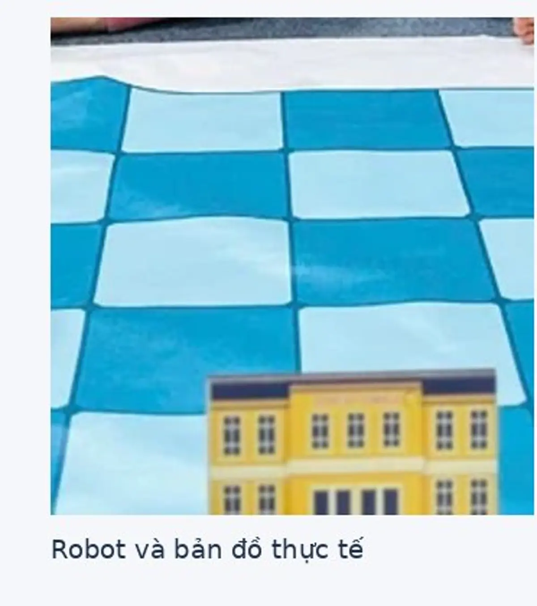

SUNBOT
| LỚP HỌC THÔNG MINH
4 cảnh · Giọng đọc thu thật · Trải nghiệm âm thanh

CẢNH 01 / 04
Lớp học thông minh Sunbot
Học liệu số, robot và học cụ cùng tạo nên trải nghiệm học tập.
Bấm Phát trình diễn để nghe giọng thuyết minh.
01 Lớp học
02 Thử thách robot
03 Học liệu số
04 Giải pháp
Phát trình diễn
Chạy lại
Âm thanh
Giọng + nhạc
Chỉ giọng đọc
Tắt tiếng
00:00 / 01:06
Hình ảnh và bố cục mang tính minh họa; một số ảnh lấy từ tư liệu lớp học Sunbot.